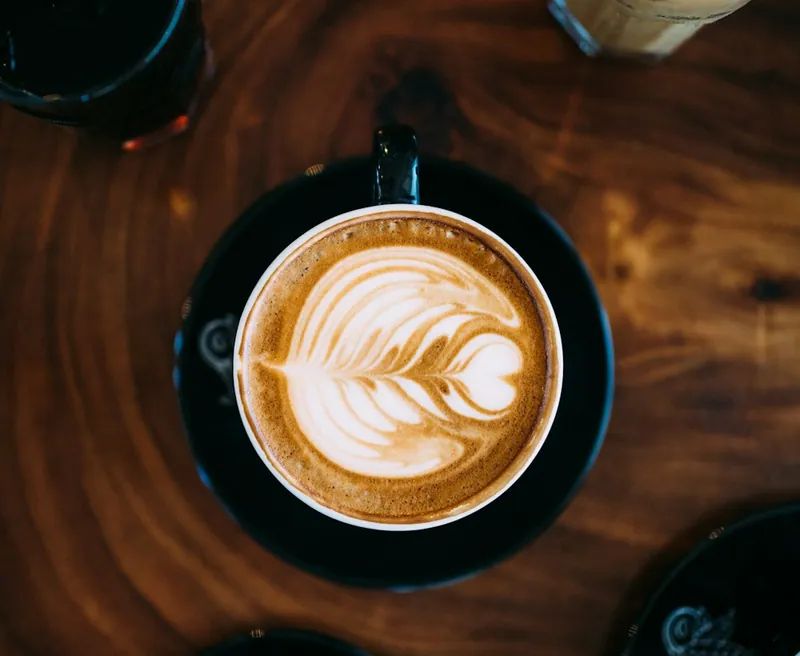

КофеФлэт уайт
130 ₴Плотный кофе, мягкое молоко.
200 мл
Состав и аллергены
Сбалансированный и насыщенный. Хороший выбор, если хочется почувствовать кофе в молоке.
- Состав
- Двойной эспрессо, молоко.
- Аллергены
- Молоко. Растительный напиток — по запросу.